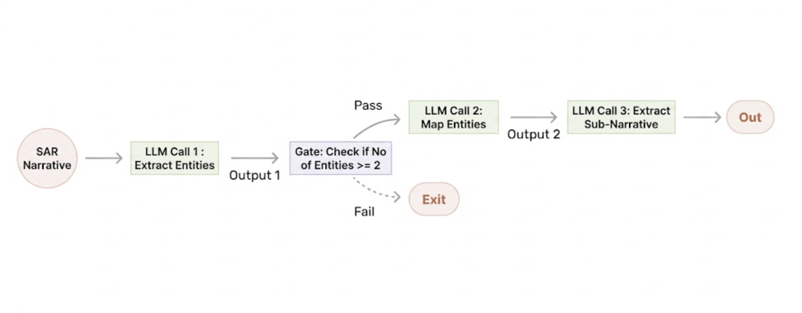
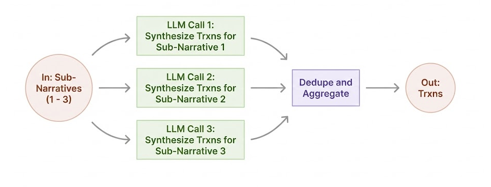
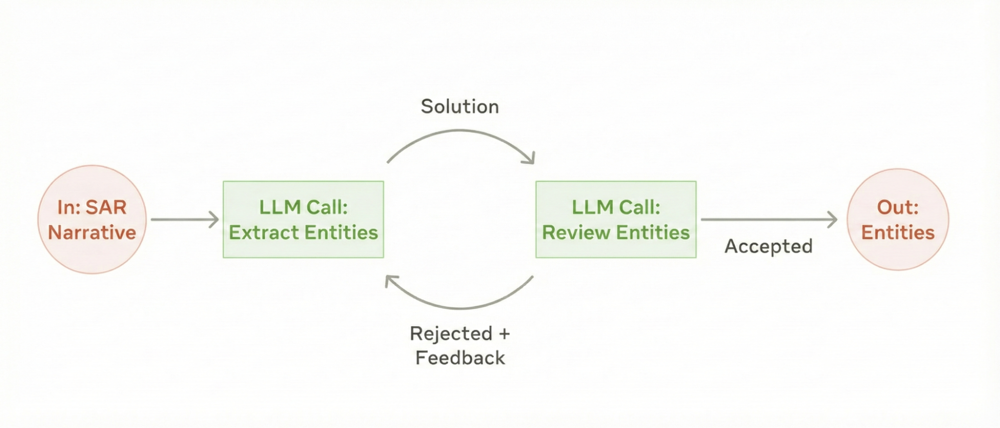

Large Language Models (LLMs) are transforming how analytics professionals solve complex business problems. Agents and agentic workflows represent two distinct approaches to leveraging LLMs.
Agentic workflows are systems where LLMs and tools are orchestrated through predefined code paths. Agents, on the other hand, are systems where LLMs dynamically direct their own processes and tool usage, maintaining control over how they accomplish tasks.
This article focuses on agentic workflows—a systematic, controllable approach suited to analytics applications in highly regulated industries.
Agents vs Agentic Workflows
Consider automated report generation for Enhanced Due Diligence in financial services. An agentic workflow predefines the sequence:
- query specific data sources
- Synthesize & analyze data to verify departure from expected behavior.
- Prepare a report in line with a specific template.
The key distinction: the sequence of tasks—which data sources to query, what analysis to perform, and the report format—are all prespecified.
An agent is an LLM equipped with tools and memory to accomplish goals. Agents are open-ended—a Customer Report Agent could create Enhanced Due Diligence, fraud, credit, or marketing reports, dynamically planning and executing different workflows based on the goal.
| Dimension | Agents | Agentic Workflows |
|---|---|---|
| Autonomy | High | Low |
| Complexity | High | Low |
| Motivation | Goal Driven | Task Driven |
| Risk | High | Low |
For the remainder of this post, I will focus on agentic workflows as they are the best starting point for analytics professionals looking to use AI to solve business problems in regulated domains.
Case Study: Transaction Extraction from Suspicious Activity Reports
Financial institutions file Suspicious Activity Reports (SARs) describing potential money laundering. These narratives are unstructured text, making systematic analysis difficult.
Financial Institutions can use an agentic workflow to extract structured transaction records from SAR narratives, enabling:
- Historical model training: Using actual suspicious activity patterns to improve transaction monitoring models
- Model validation: Ensuring system updates don’t miss previously-flagged patterns
- Network analysis: Building transaction graphs across entities mentioned in SARs
This represents a previously impossible application—extracting structured data from complex, varied narratives at scale.
Video demonstration: https://youtu.be/g6F6u9s9oGw
Design Patterns for Agentic Workflows
This application consists of two workflows
- Entity and Narrative Extraction
- Transaction Synthesis
Both these workflows were built using well defined design patterns discussed below.
1) Prompt Chaining : Sequential Decomposition
This pattern is suitable if you can decompose a problem into sub-problems that can be solved sequentially.
In this specific case, LLMs are involved sequentially so solve the following sub-problems in sequence.
- Entity Extraction: Named entity recognition for accounts, individuals, organizations, financial institutions
- Entity Resolution: Mapping extracted entities to canonical identifiers
- Context Extraction: Isolating relevant narrative segments per entity
Figure 1: Entity and Narrative Extraction Workflow 
This decomposition allows independent optimization and testing of each component. Each stage can be improved without affecting others, enabling modular development.
2) Routing : Dynamic Method Selection
This pattern is suitable when you have to choose between different approaches based on the specific instance of the problem being solved.
A routing LLM selects the optimal approach based on input characteristics:
- Direct synthesis: For small, diverse transaction sets where the LLM generates records directly
- Simulation-based: For summarized high-volume activity using statistical methods via Python functions/tools
Figure 2: Trxn Synthesis Workflow 
3) Parallelization : Computational Efficiency
This pattern is suitable for problems that are “embarrassingly parallel”—where sub-problems have no dependencies and can be solved independently. LLMs can independently work on multiple sub-problems in parallel.
Figure 3: Parallelized Trxn Synthesis Workflow

Narratives are decomposed into independent sub-problems (e.g., activity for different accounts) processed simultaneously, then aggregated. This reduces latency from O(n) to O(1) for n independent sub-narratives and enables horizontal scaling.
4) Evaluator-Optimizer : Quality Control
This pattern is suitable for high stakes use cases where additional controls need to be in place to reduce or catch errors.
In this pattern, one LLM validates another’s output—for example, verifying all entities were extracted or checking for hallucinated entities not present in the source text. Note: Newer reasoning models internalize this pattern through chain-of-thought processing, reducing the need for explicit implementation.
Figure 4: Evaluator-Optimizer Workflow for Entity Extraction 
These four patterns can be composed together. The SAR trxn extraction application uses prompt chaining for entity extraction, routing for transaction synthesis method selection, and parallelization to process multiple sub-narratives simultaneously.
Combining these patterns addresses most analytics workflow requirements across domains.
Evaluation Framework
Golden Datasets
To evaluate your workflows, you should invest in creating a golden dataset with inputs and expected outputs. This will require some manual effort and inputs from Subject Matter Experts depending on the domain.
In this particular example:
Dataset: Four sample narratives from FinCEN guidance documents provided initial test cases Annotation: Subject matter experts manually extracted entities and transactions, creating ground truth
Expansion strategy: Continuously add edge cases as they emerge in production or testing
The important thing is to ensure you start small and build out this golden dataset over time.
Metrics Design
For this use case, multiple performance dimensions are tracked to ensure comprehensive evaluation:
Entity Extraction:
- Precision: What percentage of extracted entities are correct?
- Recall: What percentage of actual entities were found?
- F1 score for entity type classification (person, organization, account, financial institution)
Transaction Synthesis:
- Mean Absolute Percentage Error (MAPE) for transaction amounts
- Count accuracy: predicted vs. actual transaction count
- Attribute accuracy: correctness of originator, beneficiary, channel, branch location
Tracking and visualizing these metrics will also allow you to quickly iterate and improve.
For your use case, identify the metrics that make the most sense. Track and visualize them to ensure you are improving as you iterate on your application.
Validation Protocol
Unit Testing: Each LLM call can be tested on 10-20 examples covering simple cases and known edge cases. For example, testing entity extraction on sentences with varying complexity: simple cases (“John deposited $1,000”) to complex cases with multiple entities and ambiguous references.
Integration Testing: End-to-end workflow tested on complete narratives to ensure components work together correctly.
Regression Testing: Maintain comprehensive test suite; re-run on all prompt or model changes to catch degradation.
Production Monitoring: Capture implicit and explicit user feedback where possible and use this to create metrics. Getting human feedback on a sample of outputs and using LLM as a judge on your full set of instances to generate metrics is also acceptable. Track metric drift over time, establish statistical control limits, and define re-validation triggers (e.g., 5% degradation in F1 score).
Using an observability tool to log every interaction of your AI system is also recommended. Traces produced by these tools can be embedded, clustered and sampled to help identify failure modes you can engineer your application to address.
This structured approach enables confident deployment and provides the data necessary for continuous improvement.
Implementation Considerations
Model Selection: Start with frontier models (GPT-5, Claude 4.5, Gemini 3) to establish performance ceiling. Only after meeting quality targets should you explore cost optimization with smaller models.
Framework Selection: Balance abstraction with debuggability. Higher-level frameworks (Autogen, LangChain, LlamaIndex) accelerate development but may obscure failure modes. We encountered issues with automatic context window management where tool outputs exceeded limits and were silently truncated, requiring framework-level debugging.
Computational Cost: Track token usage and latency. The routing pattern reduced token consumption significantly by directing complex cases to a simulator rather than direct LLM synthesis. The parallelization pattern reduced latency of processing an input by more than half.
Prompt Engineering: Treat your prompts as code, YAML files are a good option. Version control all prompts using Git or similar systems.
Identifying High-Value Applications
Target problems with these characteristics:
- High manual effort in data extraction, synthesis, or analysis requiring hours of human time per instance
- Unstructured inputs previously requiring human interpretation—text, documents, images
- Well-defined outputs enabling objective evaluation with clear success criteria
The sweet spot: problems where the alternative is either prohibitively expensive human labor or simply not attempting the task at all.
Examples across domains:
Healthcare: Medical record synthesis for clinical trials, extracting structured data from physician notes
Legal: Contract analysis and risk extraction from complex agreements
Conclusion
The promise of AI is immense, and AI systems continue improving at a remarkable pace. However, realizing this promise in regulated environments requires thoughtful, systematic implementation.
Key Takeaways:
- Start with agentic workflows, not autonomous agents—predefined paths mean manageable risk
- Invest in evaluation frameworks before building complex systems
- Carry out systematic testing at unit, integration, and system levels following software engineering best practices
- Continuously monitor for system drift and performance degradation with automated alerts
- Iteratively refine prompts, workflows, and golden datasets based on production data and emerging failure modes
The patterns and frameworks outlined in this article will help you start realizing the benefits of this transformative technology in a safe and compliant manner.
References
https://www.anthropic.com/engineering/building-effective-agents
https://www.fincen.gov/system/files/shared/sarnarrcompletguidfinal_112003.pdf